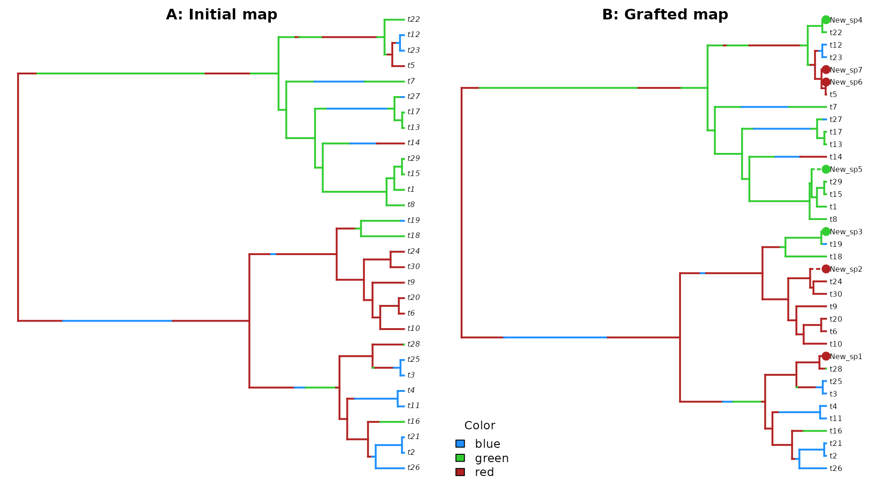
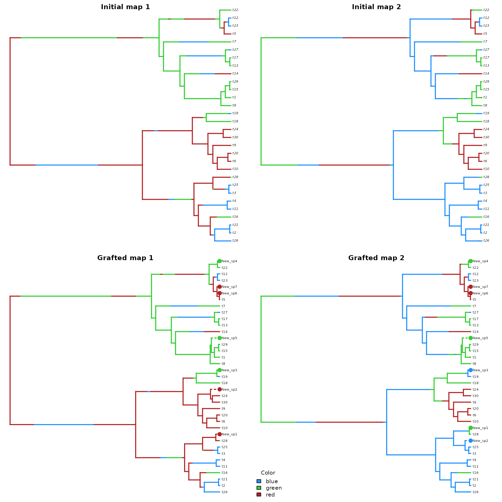
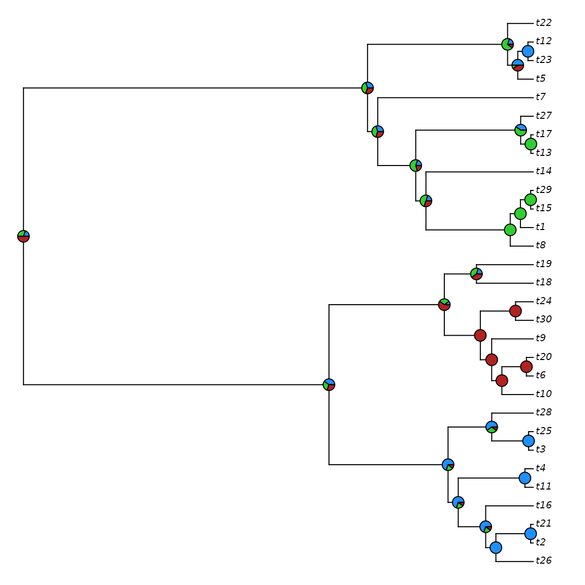
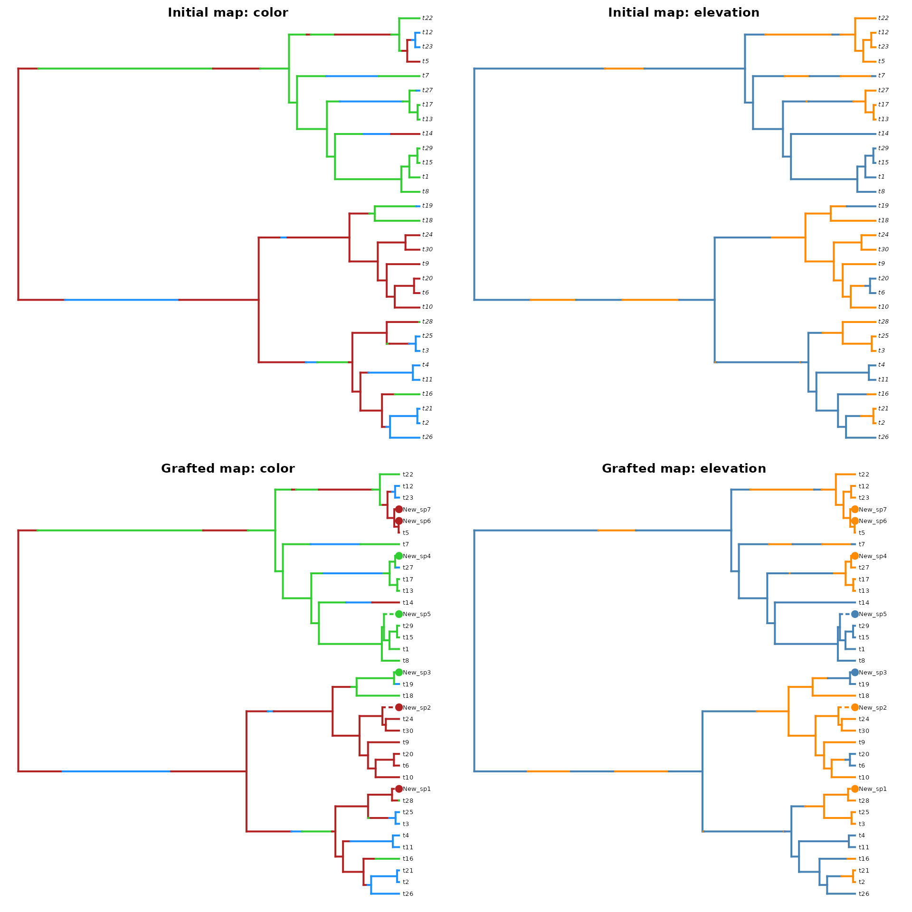
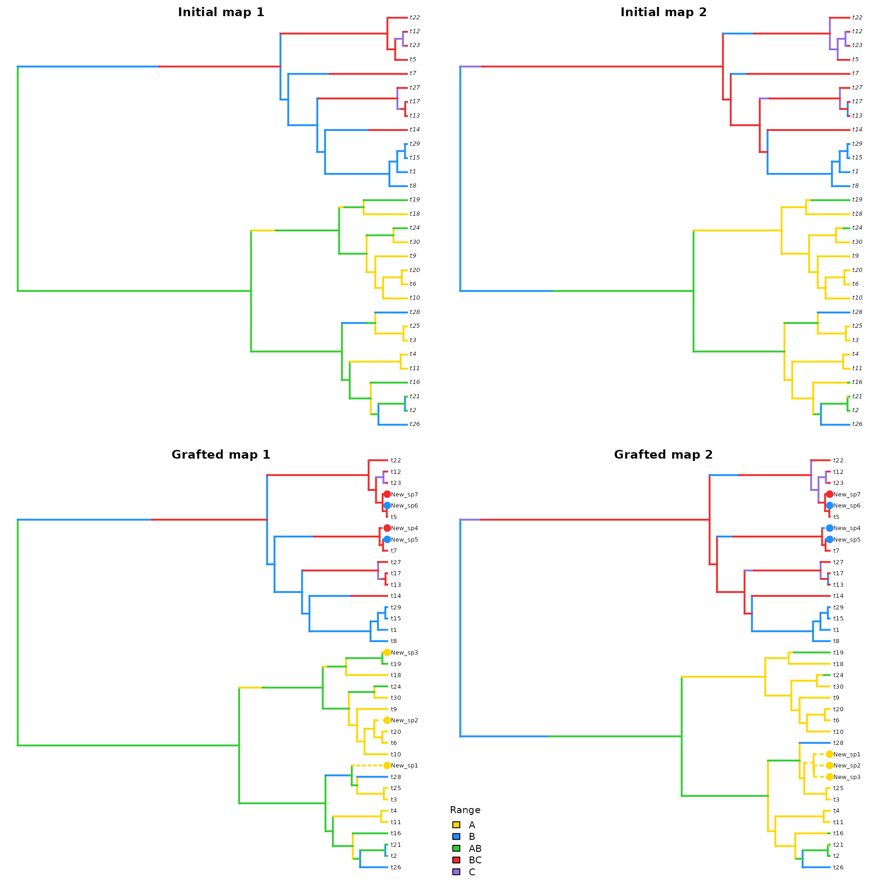
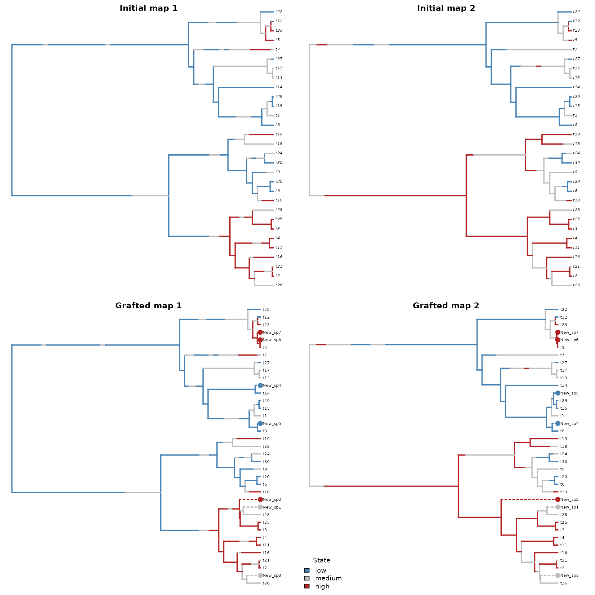

Prepare stochastic maps from tip data
Maël Doré
2026-11-27
Source:vignettes/prepare_stochastic_maps.Rmd
prepare_stochastic_maps.RmdGrafting can be constrained by species attributes
(e.g., a trait, a biogeographic range) described by stochastic
character maps of the backbone phylogeny, called
simmap in phytools. Each missing taxon and/or
clade is only grafted on branches where the trait was in one of its
allowed_states.
For instance, you can use biogeographic ranges to perform
Geographically-Informed Grafting (GIG) in a way that
limit the grafting of missing taxa/clades on branches that are inferred
within the ranges allowed for each of them (See Section 5). For
more details on how species attributes are used as
constraints for grafting, please refer to Section 4 in
vignette("graft_missing_taxa"), and each vignette dedicated
to handling a specific type of attributes
(vignette("biogeographic_data");
vignette("continuous_data");
vignette("multiple_traits")).
This tutorial explains how to prepare stochastic character maps from your own tip data:
- Infer maps of a categorical trait with deepSTRAPP.
It advises on which object to provide to the grafting functions in each case:
-
A single
simmap: one history of the attribute evolving along the branches of the backbone. -
A
multiSimmap: a set of histories of the same attribute (e.g., 100 maps), which accounts for the uncertainty in the reconstruction of the ancestral states. -
A list of
multiSimmaps: one set of maps per attribute, to combine several traits (or a trait and biogeographic ranges).
The tutorial covers the specific types of attributes handled by phylograftR:
- Infer maps of biogeographic ranges using
BioGeoBEARS. - Produce continuous stochastic maps using
contsimmap, and discretize them.
Finally, it covers:
- Common pitfalls in dealing with stochastic maps as inputs for phylograftR.
In each of the Sections 2 to 6, we graft the 7 toy missing taxa with the maps to show how they are used as constraints. The figures show the initial maps of the backbone and the updated maps of the grafted phylogenies side by side. This is only meant to show how the maps are provided and used: the options of the grafting functions are explored in the vignettes dedicated to each type of attribute (see Next steps).
Why deepSTRAPP rather than
phytools::make.simmap() alone?
To produce the stochastic maps, we use the R package deepSTRAPP
and its dedicated all-inclusive function:
deepSTRAPP::prepare_trait_data().
-
Model comparison and selection are automatic.
phytools::make.simmap()fits the single model you ask for (e.g.,"ARD") and simulates the maps under it: choosing the model is up to you.prepare_trait_data()fits all the candidate models, compares them with their AICc, selects the best one and simulates the maps under it, and returns the table of model comparison, all in one single call. -
One function for all the types of attributes:
deepSTRAPP::prepare_trait_data()can handle categorical traits (throughgeigerandphytools), biogeographic ranges (throughBioGeoBEARS), and continuous traits (throughcontsimmap), with the same logic and suite of arguments. -
For biogeographic ranges, it embeds the whole machinery of
BioGeoBEARS: preparation of the input files, fit and comparison of the models (DEC,DIVALIKE,BAYAREALIKE, with or without+J), best model selection, biogeographic stochastic mapping, and the conversion of the outputs ofBioGeoBEARS(tables of cladogenetic and anagenetic events) intosimmaps ready-to-use for as constraints for grafting.
Using deepSTRAPP is a recommendation, not a requirement:
any simmap or multiSimmap of the backbone can
be used. For instance, you can provide maps built directly with
phytools::make.simmap() when you have already chosen your
model.
The code that runs deepSTRAPP and
BioGeoBEARS is shown but not run here (the runs
can be long). The results are loaded from datasets
shipped with phylograftR: they were produced with this
code.
| Attribute | trait_data_type |
Models available | Output of prepare_trait_data() to use |
Provide to the grafting functions |
|---|---|---|---|---|
| Categorical trait | "categorical" |
"ER", "SYM",
"ARD" (default), "meristic",
"matrix" (custom) |
$simmaps |
simmap / multiSimmap
|
| Biogeographic ranges | "biogeographic" |
"DEC" (default), "DEC+J",
"DIVALIKE", "DIVALIKE+J",
"BAYAREALIKE", "BAYAREALIKE+J"
|
$simmaps |
simmap / multiSimmap
|
| Continuous trait | "continuous" |
"BM" (default), "OU",
"EB", "rate_trend", "lambda",
"kappa", "delta"
|
$contMaps |
discretize first: see
vignette("continuous_data")
|
For more details and options, please refer to the tutorials of the R
package deepSTRAPP directly.
See the companion website (https://maeldore.github.io/deepSTRAPP/) and its list of tutorials (https://maeldore.github.io/deepSTRAPP/articles/index.html), in particular the tutorials on how to model categorical, continuous and biogeographic trait evolution.
The present tutorial gives the essential steps, and focuses on how to use the resulting maps with phylograftR.
0/ Toy data
We use the toy backbone and the tip data of three
attributes: a color (three states), an elevation (two states)
and a biogeographic range (three areas that can be combined in
multi-area ranges). The tip data are held in a data.frame
with one row per tip.
# ------ Toy data ------ #
data(toy_backbone)
data(toy_tip_data)
data(toy_multiSimmap)
data(toy_multiSimmap_elevation)
data(toy_multiSimmap_ranges)
# Tip data of the three attributes
head(toy_tip_data)
#> color elevation range
#> t26 blue low B
#> t2 blue high AB
#> t21 blue high AB
#> t16 green high AB
#> t11 blue low A
#> t4 blue low A
# Inspect distribution of data across tips
lapply(toy_tip_data, table)
#> $color
#>
#> blue green red
#> 11 11 8
#>
#> $elevation
#>
#> high low
#> 18 12
#>
#> $range
#>
#> A AB B BC
#> 10 5 6 9deepSTRAPP::prepare_trait_data() needs the tip data of
one attribute as a named vector, with names that match
the tip labels of the phylogeny (phylo$tip.label):
# ------ Named vectors of tip data ------ #
# Prepare tip data as named vectors
tip_colors <- setNames(toy_tip_data$color, row.names(toy_tip_data))
tip_elevations <- setNames(toy_tip_data$elevation, row.names(toy_tip_data))
tip_ranges <- setNames(toy_tip_data$range, row.names(toy_tip_data))
# The names are the tip labels of the backbone
all(names(tip_colors) == toy_backbone$tip.label)
#> [1] TRUE
# ------ Colors of the states ------ #
# Colors of the three states of the color trait
color_states <- c(blue = "dodgerblue", green = "limegreen", red = "firebrick")
# Colors of the two states of the elevation
elevation_states <- c(high = "darkorange", low = "steelblue")
# Colors of the ranges: same color scheme as in vignette("biogeographic_data") (A, B, AB, BC),
# completed with the other ranges that can be found in the maps (C, AC, and the null range "_")
range_colors <- c(A = "gold", B = "dodgerblue", AB = "limegreen", BC = "firebrick2",
C = "mediumpurple", AC = "darkorange", "_" = "grey50")To compare the initial maps of the backbone with the
updated maps of the grafted phylogenies, we define two
helpers to plot them in the same way. In the updated maps, the
grafted branches are dashed, and the grafted
tips are marked with a point in the color of the state they
inherited (see plot_grafted()).
# ------ Helpers to plot the maps before and after grafting ------ #
# Plot an initial simmap of the backbone
plot_initial_map <- function (simmap, colors, main)
{
phytools::plotSimmap(simmap, colors = colors, fsize = 0.5, ftype = "i", lwd = 2)
title(main, cex.main = 1, line = -1) # Inside the plot region, as plotSimmap() resets the margins
}
# Plot the updated simmap of a grafted phylogeny
# 'trait' is the name (or position) of the trait to plot when the maps of several traits were used
plot_updated_map <- function (phy_grafted, colors, main, trait = 1)
{
# Grafted branches are dashed
plot_grafted(phy_grafted, which = "edges", trait = trait, simmap_colors = colors,
fsize = 0.5, lwd = 2)
title(main, cex.main = 1, line = -1)
# Grafted tips are marked with a point in the color of the state they inherited
simmap <- phy_grafted$simmap
if (!inherits(simmap, "simmap")) { simmap <- simmap[[trait]] } # Maps of several traits
grafted_tips <- which(phy_grafted$grafted_tips)
tip_states <- phytools::getStates(simmap, type = "tips")[phy_grafted$tip.label[grafted_tips]]
ape::tiplabels(tip = grafted_tips, pch = 19, cex = 1.2, col = colors[tip_states])
}1/ Infer maps of a categorical trait with deepSTRAPP
The call below fits three models of evolution of the color, compares them, selects automatically the one with the lowest AICc, and simulates stochastic maps conditioned on the tip data and on the best model.
# ------ Not run: build the maps of the color with deepSTRAPP ------ #
color_data <- deepSTRAPP::prepare_trait_data(tip_data = tip_colors, # Named vector of tip states
trait_data_type = "categorical",
phylo = toy_backbone, # Time-calibrated phylogeny
evolutionary_models = c("ER", "SYM", "ARD"), # Models to compare. Default is "ARD"
seed = 1234, # For reproducibility
nb_simulations = 100, # Number of stochastic maps
return_simmaps = TRUE, # Needed to get the maps
return_model_selection_df = TRUE, # Needed to get the comparison of models
plot_map = FALSE, plot_overlay = FALSE)
# Comparison of the models (ER is the best model here)
color_data$model_selection_df
# The stochastic maps: a multiSimmap of 100 maps
my_multiSimmap <- color_data$simmapsThe main arguments are:
-
evolutionary_models: the models to compare (see the table above). The model with the lowest AICc is used to simulate the maps. A custom matrix of transitions (Q_matrix) can be used with the model"matrix", for instance to forbid some transitions between states (e.g., an ordered trait). -
nb_simulations: the number of maps.deepSTRAPPrecommends at least 100 maps, and warns if fewer are requested. -
return_simmaps = TRUE: the maps are only returned in$simmapsif you ask for them. By default,prepare_trait_data()only returns the summaries thatdeepSTRAPPneeds for its own workflow (e.g.,$densityMaps). -
seed: to reproduce the maps.
The maps are conditioned on the tip data: the tips
are always in the states you provided, and the maps only differ in the
internal branches. The maps shipped with phylograftR are
the first 10 of 100 maps simulated with this script. 10
maps are enough for illustration, but actual analyses should use
more (100 or more).
2/ Use a single map: simmap
A single simmap is one possible history
of the trait: take one map of the output. It is the
simplest input to provide under the argument simmap for the
grafting functions, and it is enough to explore the grafting with
constraints.
# ------ One simmap ------ #
# Extract one map (with [[ ]]): an object of class "simmap"
my_simmap <- toy_multiSimmap[[1]]
class(my_simmap)
#> [1] "simmap" "phylo"
# Time spent in each state (sum on all branches)
round(colSums(my_simmap$mapped.edge) / sum(my_simmap$mapped.edge), 2)
#> blue green red
#> 0.22 0.37 0.41
# The tips in the simmap are in the states of the tip data
all(phytools::getStates(my_simmap, type = "tips")[names(tip_colors)] == tip_colors)
#> [1] TRUEWe use this map to graft the 7 toy missing taxa. The colors
allowed for each taxon are provided in the item
allowed_states of the list of missing taxa (see
vignette("format_inputs")): taxa with NULL can
be grafted anywhere in their target clade. The map is provided to the
argument simmap of the grafting
function.
# ------ Graft with a single simmap ------ #
# Missing taxa with their allowed colors
data(toy_missing_taxa_list_with_allowed_states)
taxa_colors <- toy_missing_taxa_list_with_allowed_states
# New_sp1 is only allowed in "red" in the current mising_taxa_list. We modify it to also allow "green",
# so that a branch is available for it in each of the 10 maps used in Section 3 (see vignette("check_grafting"))
taxa_colors$allowed_states[[1]] <- c("red", "green")
# Graft the taxa using the map as constraint
grafted_single <- graft_missing_taxa(phy = toy_backbone, missing_taxa_list = taxa_colors,
simmap = my_simmap, verbose = FALSE, seed = 1)
# The output includes the updated map of the grafted phylogeny
class(grafted_single$simmap)
#> [1] "simmap" "phylo"The updated map includes the grafted branches, that are entirely in the state of the branch piece they were grafted on, and so are the grafted tips:
# ------ Compare the initial map and the updated map ------ #
par(mfrow = c(1, 2), mar = c(0.5, 0.5, 2, 0.5))
plot_initial_map(my_simmap, colors = color_states, main = "A: Initial map")
plot_updated_map(grafted_single, colors = color_states, main = "B: Grafted map")
legend("bottomleft", legend = names(color_states), fill = color_states, title = "Color", bty = "n", cex = 0.8)
A single map is one hypothesis among many about where the states changed along the branches. Grafting with it treats this history as known, so the uncertainty on the ancestral states is ignored. It is suitable if there is limited uncertainty in the inference, but in most biological cases, you would like to account for this uncertainty in ancestral states by using several maps (See Section 3 below)
3/ Use several maps: multiSimmap
The $simmaps element of the output of
prepare_trait_data() is a multiSimmap: a set
of maps of the same trait, used as alternative
hypotheses about its evolution. Provide it through the same
simmap argument to the grafting functions: each map is then
used for the grafting, and the uncertainty on the history of the trait
is propagated to the grafted phylogenies.
# ------ A multiSimmap ------ #
class(toy_multiSimmap)
#> [1] "multiSimmap" "multiPhylo"
length(toy_multiSimmap)
#> [1] 10
# All the maps are in the same states
unique(unlist(lapply(toy_multiSimmap, function (x) colnames(x$mapped.edge))))
#> [1] "blue" "green" "red"The maps share the same tip states, but differ in the internal branches. We graft the taxa with all the 10 maps, with the default parameters. The output is a list with one grafted phylogeny per map.
# ------ Graft with a multiSimmap ------ #
# Graft the taxa with each of the 10 maps (one simulation per map by default)
grafted_multi <- graft_missing_taxa(phy = toy_backbone, missing_taxa_list = taxa_colors,
simmap = toy_multiSimmap, verbose = FALSE, seed = 1)
length(grafted_multi)
#> [1] 10We plot two of the initial maps (upper line) and the updated maps of the corresponding grafted phylogenies (lower line). Each grafted phylogeny is built with a different history of the trait: the uncertainty on the trait history is propagated to the grafted phylogenies.
# ------ Initial maps (upper line) and grafted maps (lower line) ------ #
par(mfrow = c(2, 2), mar = c(0.5, 0.5, 2, 0.5))
# Upper line: initial maps
for (i in 1:2) { plot_initial_map(toy_multiSimmap[[i]], colors = color_states, main = paste("Initial map", i)) }
# Lower line: grafted maps
for (i in 1:2) { plot_updated_map(grafted_multi[[i]], colors = color_states, main = paste("Grafted map", i)) }
legend("bottomleft", legend = names(color_states), fill = color_states, title = "Color", bty = "n", cex = 0.8)
The posterior probabilities of each state at the internal nodes, computed over the maps, summarize this uncertainty:
# ------ Posterior probability of the states at the nodes ------ #
node_probs <- phytools::describe.simmap(toy_multiSimmap, plot = FALSE)$ace
phytools::plotTree(toy_backbone, ftype = "i", fsize = 0.6, lwd = 1)
ape::nodelabels(pie = node_probs, piecol = color_states[colnames(node_probs)], cex = 0.5)
The more maps, the more precise the probabilities (i.e., the more
accurately our set of grafted phylogenies account for the uncertainty in
the evolution of the trait used as constraint). Note that the
number of maps and the number of simulations multiply:
with P maps and N simulations per map,
P x N grafted phylogenies are produced (see
vignette("handle_uncertainty")).
4/ Combine several traits: list of multiSimmaps
To use several attributes at once as constraints, prepare the maps of each attribute separately (the attributes are modeled independently), and combine them in a list with one element per attribute. The grafting function will account jointly for all constraints to ensure that grafted lineages respect their allowed states in all traits.
Below, we prepare the maps of the elevation as for the color:
# ------ Not run: build the maps of the elevation with deepSTRAPP ------ #
elevation_data <- deepSTRAPP::prepare_trait_data(tip_data = tip_elevations,
trait_data_type = "categorical",
phylo = toy_backbone,
evolutionary_models = c("ER", "ARD"),
seed = 2345,
nb_simulations = 100, # The same number of maps as for the color
return_simmaps = TRUE,
plot_map = FALSE, plot_overlay = FALSE)
# Comparison of the models (ER is the best model here)
elevation_data$model_selection_df
# The stochastic maps: a multiSimmap of 100 maps
my_multiSimmap_elevation <- elevation_data$simmapsThe maps of the traits are combined in a named list,
provided to the argument simmap. We start with the simplest
case: a single map per trait, i.e., the map 1 of the
color and the map 1 of the elevation.
# ------ List of simmaps: one element per trait ------ #
# Combine map 1 for color and map 1 for elevation in a list of two simmaps
maps_two_traits_single <- list(color = toy_multiSimmap[[1]], elevation = toy_multiSimmap_elevation[[1]])
# States of each trait
lapply(maps_two_traits_single, function (x) colnames(x$mapped.edge))
#> $color
#> [1] "blue" "green" "red"
#>
#> $elevation
#> [1] "high" "low"The allowed states are then given in the
missing_taxa_list as a list with one element per trait (in
the order of the list of maps): list(color, elevation). We
graft the 7 missing taxa that have allowed colors and/or allowed
elevations (NULL means that all the states of this trait
are allowed).
# ------ Graft with two traits ------ #
# Missing taxa with the allowed states of the color and of the elevation
data(toy_missing_taxa_list_with_two_traits)
taxa_two_traits <- toy_missing_taxa_list_with_two_traits
# New_sp1 is only allowed in "red" in the current mising_taxa_list. We modify it to also allow "green",
# so that a branch is available for it in each of the 10 pairs of maps used here
taxa_two_traits$allowed_states[[1]] <- list(c("red", "green"), NULL)
# Graft the taxa using the map of each trait
grafted_two_traits <- graft_missing_taxa(phy = toy_backbone, missing_taxa_list = taxa_two_traits,
simmap = maps_two_traits_single, verbose = FALSE, seed = 1)
# We obtain one grafted phylogeny, with one updated map per trait
names(grafted_two_traits$simmap)
#> [1] "color" "elevation"We plot the initial maps (upper line) and the updated maps (lower line) of the color (left) and of the elevation (right). Each grafted taxon is grafted on a branch piece in one of its allowed states for each trait, and inherits both states.
# ------ Initial maps (upper line) and grafted maps (lower line) ------ #
par(mfrow = c(2, 2), mar = c(0.5, 0.5, 2, 0.5))
# Upper line: initial maps of the color and of the elevation
plot_initial_map(maps_two_traits_single$color, colors = color_states, main = "Initial map: color")
plot_initial_map(maps_two_traits_single$elevation, colors = elevation_states, main = "Initial map: elevation")
# Lower line: grafted maps
plot_updated_map(grafted_two_traits, colors = color_states, trait = "color", main = "Grafted map: color")
plot_updated_map(grafted_two_traits, colors = elevation_states, trait = "elevation", main = "Grafted map: elevation")
The same works with multiSimmaps, to
account for the uncertainty in each trait. The list is then a list of
multiSimmaps, and all the traits must have the same
number of maps: the maps are paired (map 1 of
each trait is used together, then map 2 of each trait, and so on). The
output has one grafted phylogeny per pair of maps (times the number of
simulations requested).
# ------ List of multiSimmaps: one element per trait ------ #
# Combine all maps for color with all maps for elevation in a list of two multiSimmap
maps_two_traits <- list(color = toy_multiSimmap, elevation = toy_multiSimmap_elevation)
# Number of maps per trait: must be the same
sapply(maps_two_traits, length)
#> color elevation
#> 10 10
# Graft the taxa using the map of each trait
grafted_two_traits_multi <- graft_missing_taxa(phy = toy_backbone, missing_taxa_list = taxa_two_traits,
simmap = maps_two_traits, verbose = FALSE, seed = 1)
# We obtain 10 grafted phylogeny, one per map of each trait.
length(grafted_two_traits_multi)
#> [1] 10
# Each grafted phylogeny contains one updated map per trait
names(grafted_two_traits_multi[[1]]$simmap)
#> [1] "color" "elevation"A list of single simmaps and a list of
multiSimmaps cannot be mixed: a
trait with a single simmap and another with a
multiSimmap is refused, but you can always
duplicate a single simmap in the list, so that it pairs
with all the maps of the multiSimmap of the second
trait.
# ------ Pair a single simmap with a multiSimmap ------ #
# Duplicate the map 1 of the elevation 10 times (with [ ], the class multiSimmap is kept)
elevation_duplicated <- toy_multiSimmap_elevation[rep(1, length(toy_multiSimmap))]
sapply(list(color = toy_multiSimmap, elevation = elevation_duplicated), length)
#> color elevation
#> 10 10The grafting with several traits is detailed in
vignette("multiple_traits").
5/ Infer maps of biogeographic ranges with BioGeoBEARS
For biogeographic ranges,
deepSTRAPP::prepare_trait_data() embeds the whole
machinery of the BioGeoBEARS
framework in a single call:
- it prepares the input files of
BioGeoBEARSfrom your phylogeny and your tip ranges; - it fits the models you ask for, and selects
the best one by AICc (the models with a
+Jparameter are fit starting from the estimates of the corresponding model withoutJ); - it runs the biogeographic stochastic mapping (BSM) under the best model, which simulates histories of the ranges as tables of cladogenetic events (at the nodes) and anagenetic events (along the branches);
- it converts these tables of events into
simmaps, the format used byphylograftR.
The R package BioGeoBEARS is not on CRAN and must be
installed manually from the author’s repository
(pak::pak("nmatzke/BioGeoBEARS")).
The tip data are the ranges of the tips, coded as in
BioGeoBEARS: one capital letter per area, and the
letters of a multi-area range in alphabetical order (e.g.,
"A", "AB"). Alternatively, they can be
provided as a matrix or data.frame of presence
(1) / absence (0), with one column per area and one row per taxon.
# ------ Not run: build the maps of the ranges with deepSTRAPP and BioGeoBEARS ------ #
range_data <- deepSTRAPP::prepare_trait_data(tip_data = tip_ranges, # Named vector of ranges (or binary matrix)
trait_data_type = "biogeographic",
phylo = toy_backbone,
evolutionary_models = "DEC", # Models to compare, e.g., c("DEC", "DEC+J", "DIVALIKE", "DIVALIKE+J")
max_range_size = 2, # Maximum number of areas in a range
BioGeoBEARS_directory_path = "./BioGeoBEARS_files/", # Directory for input/output files
keep_BioGeoBEARS_files = FALSE,
nb_cores = 1,
seed = 3456,
nb_simulations = 100,
return_simmaps = TRUE,
return_model_selection_df = TRUE,
return_BSM = FALSE, # TRUE to also get the tables of events
plot_map = FALSE, plot_overlay = FALSE)
# Comparison of the models (Here, we fit only a DEC model)
range_data$model_selection_df
# The stochastic maps of ranges, converted from the BSM events: a multiSimmap of 100 maps
my_multiSimmap_ranges <- range_data$simmapsThe main arguments specific to ranges are:
-
evolutionary_models: theBioGeoBEARSmodels to compare, fit and selected automatically. The+Jmodels add jump dispersal (founder-event speciation). -
return_BSM = TRUE: also returns the tables of cladogenetic and anagenetic events of each simulation, from which the maps are built ($BSM_output). -
max_range_size: the maximum number of areas in a range. It limits the number of ranges considered, so the computation time, but also restrict inferences to realistic ranges. -
BioGeoBEARS_directory_path: the directory where the input and output files ofBioGeoBEARSare written (and kept ifkeep_BioGeoBEARS_files = TRUE). -
nb_cores: the number of cores used for the runs ofBioGeoBEARS.
The output $simmaps is a multiSimmap, as
for a categorical trait, in which the states are the
ranges.
# ------ Maps of ranges ------ #
class(toy_multiSimmap_ranges)
#> [1] "multiSimmap" "multiPhylo"
length(toy_multiSimmap_ranges)
#> [1] 10
# Ranges of the tips
sort(unique(tip_ranges))
#> [1] "A" "AB" "B" "BC"
# Ranges visited in the maps, i.e., with a positive residence time on the branches
# (the columns of 'mapped.edge' list all the ranges of the model, including those never visited)
visited_ranges <- sort(unique(unlist(lapply(toy_multiSimmap_ranges, function (x) {
colnames(x$mapped.edge)[colSums(x$mapped.edge) > 0] }))))
visited_ranges
#> [1] "A" "AB" "B" "BC" "C"The ranges of the maps include the ranges of the tips, and may
include ranges that are only found along internal
branches, as ancestors can have ranges that no tip has. Keep it
in mind when you choose the allowed ranges of the
missing taxa: they must be ranges found in the maps. With
treat_states_as_ranges = TRUE ranges that are contained in
the mapped ranges can also be used (i.e., "C" when only
"BC" appears in the maps; see
vignette("biogeographic_data")).
We graft the 7 toy missing taxa with the maps of ranges. The taxa are
allowed in the ranges "A" or "B" only, and
any range that includes these areas is accepted (e.g.,
"AB"), as the states are treated as ranges
(treat_states_as_ranges = TRUE). As in Section 3,
we use the first two maps for illustration.
# ------ Graft with a multiSimmap of ranges ------ #
# Missing taxa with their allowed ranges
data(toy_missing_taxa_list_with_allowed_ranges)
# Graft the taxa using the first two maps of ranges
grafted_ranges <- graft_missing_taxa(phy = toy_backbone,
missing_taxa_list = toy_missing_taxa_list_with_allowed_ranges,
simmap = toy_multiSimmap_ranges[1:2],
allowed_states = c("A", "B"), treat_states_as_ranges = TRUE,
nb_simulations = 1, verbose = FALSE, seed = 1)
length(grafted_ranges)
#> [1] 2We plot the two initial maps (upper line) and the updated maps of the grafted phylogenies (lower line). The grafted tips inherit one of their allowed ranges that is contained in the range of the branch piece they were grafted on.
# ------ Initial maps (upper line) and grafted maps (lower line) ------ #
par(mfrow = c(2, 2), mar = c(0.5, 0.5, 2, 0.5))
# Upper line: initial maps of ranges
for (i in 1:2) { plot_initial_map(toy_multiSimmap_ranges[[i]], colors = range_colors, main = paste("Initial map", i)) }
# Lower line: grafted maps
for (i in 1:2) { plot_updated_map(grafted_ranges[[i]], colors = range_colors, main = paste("Grafted map", i)) }
legend("bottomleft", legend = names(range_colors)[names(range_colors) %in% visited_ranges],
fill = range_colors[names(range_colors) %in% visited_ranges], title = "Range", bty = "n", cex = 0.8)
In the maps, the changes of range happen along the branches (anagenetic changes: dispersal or local extinction) and at the nodes (cladogenetic events, e.g., vicariance), where a descendant branch starts in a range different from the one of its parent.
The grafting with ranges offers more options than shown here:
exact matching of the ranges
(treat_states_as_ranges = FALSE) vs. matching of
the areas (treat_states_as_ranges = TRUE), and the
combination of ranges with another trait. Options are
all explored in vignette("biogeographic_data").
6/ Continuous traits
For a continuous trait,
deepSTRAPP::prepare_trait_data(trait_data_type = "continuous")
returns a contMap ($contMap) and, with
run_stochastic_maps = TRUE, a list of
contMaps ($contMaps), which are
not stochastic character maps:
-
$contMapis a point-estimate of ancestral trait values based on the interpolation of ML estimates at nodes (seephytools::contMap()). -
$contMapsare continuous stochastic maps that describe multiple evolutionary histories of the trait on the phylogeny, simulated conditionally on the tip data and an evolutionary model withcontsimmap.
phylograftR does not handle directly continuous
data. The maps must be discretized into states
with phylograftR::convert_contMap_to_simmap() before they
can constrain the grafting. Do not discretize the tip
values before the reconstruction: the discretization is applied on the
continuous reconstruction (see Section 4 in
vignette("continuous_data")).
The R package contsimmap is not on CRAN and must be
installed manually from the authors’ repository
(pak::pak("bstaggmartin/contsimmap")).
The tip data are a named vector of numeric values.
The maps are simulated under a model of evolution (here, a Brownian
Motion, "BM") conditioned on the tip values:
# ------ Not run: build the continuous stochastic maps with deepSTRAPP ------ #
data(toy_tip_values) # Named vector of continuous values
my_trait_data <- deepSTRAPP::prepare_trait_data(tip_data = toy_tip_values,
trait_data_type = "continuous",
phylo = toy_backbone,
evolutionary_models = "BM", # Models to compare, e.g., c("BM", "OU", "EB")
run_stochastic_maps = TRUE, # Simulate the continuous stochastic maps
nb_simulations = 100,
seed = 1234,
plot_map = FALSE)
# Point estimate (interpolated ML estimates of the ancestral values)
my_contMap <- my_trait_data$contMap
# List of 100 contMaps: the stochastic maps of the continuous trait
my_contMaps_list <- my_trait_data$contMapsThe main arguments specific to continuous traits are:
-
evolutionary_models: the models of continuous trait evolution to fit and compare (models ofgeiger::fitContinuous()):"BM"(Brownian Motion, the default),"OU"(Ornstein-Uhlenbeck),"EB"(Early-Burst),"rate_trend", and the models with a transformation of the tree:"lambda","kappa"and"delta"(Pagel’s models). The best model is selected by AICc and used to simulate the maps. -
run_stochastic_maps = TRUE: simulates the continuous stochastic maps ($contMaps). Otherwise, only the point estimate$contMapis returned.
We use here the shipped list toy_contMaps (10 maps, to
keep the package light), built with the same procedure. The maps are
discretized into three states with the terciles of the tip
values as cut points (probs = c(1/3, 2/3)). The
output is a multiSimmap, used exactly as in Section
3.
# ------ Discretize the contMaps into a multiSimmap ------ #
data(toy_tip_values)
data(toy_contMaps)
state_names <- c("low", "medium", "high") # From the lowest to the highest values
state_colors <- c(low = "steelblue", medium = "grey75", high = "firebrick")
multiSimmap_continuous <- convert_contMap_to_simmap(contMap = toy_contMaps,
probs = c(1/3, 2/3), # Terciles of the tip values
states = state_names,
tip_values = toy_tip_values,
verbose = FALSE)
class(multiSimmap_continuous)
#> [1] "multiSimmap" "multiPhylo"
length(multiSimmap_continuous)
#> [1] 10The missing taxa are described by a continuous value (e.g., from the literature). The values are converted into states with the same cut points, and used as the allowed states of the taxa.
# ------ Graft with the discretized maps ------ #
data(toy_missing_taxa_list)
# Continuous values of the 7 missing taxa
missing_values <- c(New_sp1 = 0.5, New_sp2 = 2.5, New_sp3 = 1.4, New_sp4 = -3,
New_sp5 = -1, New_sp6 = 3.5, New_sp7 = 1.6)
# Convert into allowed states: provide the multiSimmap itself, as it holds the cut points
taxa_continuous <- toy_missing_taxa_list
taxa_continuous$allowed_states <- convert_values_to_states(values = missing_values,
simmap = multiSimmap_continuous)
# Graft the taxa using the first two maps
grafted_continuous <- graft_missing_taxa(phy = toy_backbone, missing_taxa_list = taxa_continuous,
simmap = multiSimmap_continuous[1:2],
nb_simulations = 1, verbose = FALSE, seed = 1)We plot the two initial discretized maps (upper line) and the updated maps of the grafted phylogenies (lower line).
# ------ Initial maps (upper line) and grafted maps (lower line) ------ #
par(mfrow = c(2, 2), mar = c(0.5, 0.5, 2, 0.5))
# Upper line: initial discretized maps
for (i in 1:2) { plot_initial_map(multiSimmap_continuous[[i]], colors = state_colors, main = paste("Initial map", i)) }
# Lower line: grafted maps
for (i in 1:2) { plot_updated_map(grafted_continuous[[i]], colors = state_colors, main = paste("Grafted map", i)) }
legend("bottomleft", legend = names(state_colors), fill = state_colors, title = "State", bty = "n", cex = 0.8)
The choice of the cut points and the number of
states, the robustness of the grafting to these
discretization choices (e.g., with a tolerance on the converted
values), and other tools available for grafting using continuous traits
are explored in-depth in the dedicated
vignette("continuous_data").
7/ Common pitfalls
Input formating conflicts
An object of class multiSimmap is read as a set
of maps of one trait. On the other hand, a list of
simmaps is considered as one map per
trait.
Therefore, if the multiSimmap class of an object is
lost, like when using lapply(), the maps may be erroneously
read as one map per trait.
In our example, the grafting function will stop and
tells you that maps of 10 traits are used, while your
allowed_states to use as constraints do not account for 10
traits:
# ------ Error with allowed states ------ #
# Load missing taxa list
data(toy_missing_taxa_list)
# A set of maps for a unique trait is a "multiSimmap", "multiPhylo" object
class(toy_multiSimmap)
#> [1] "multiSimmap" "multiPhylo"
# Convert multiSimmap into a plain list: class lost
plain_list <- lapply(toy_multiSimmap, identity)
# It becomes a list of simmaps with both classes: "phylo" and "simmap".
class(plain_list)
#> [1] "list"
table(unlist(lapply(plain_list, FUN = class)))
#>
#> phylo simmap
#> 10 10
# Check the grafting plan using a list of 10 simmaps, but allowed_states for a unique trait (color)
check_grafting_plan(phy = toy_backbone, missing_taxa_list = toy_missing_taxa_list,
simmap = plain_list, allowed_states = c("blue", "green"), verbose = FALSE)
#> Error in `normalize_trait_states()`:
#> ! The maps of 10 traits are used, so the allowed states of the global 'allowed_states' argument must be given for each trait: a list with one element per trait in the order of the traits (trait_1, trait_2, trait_3, trait_4, trait_5, trait_6, trait_7, trait_8, trait_9, trait_10), e.g., list(c('state_1', 'state_2'), NULL, 'state_3') ('NULL': no restriction on the trait), or a text such as 'state_1,state_2;;state_3'.To restore the class, set it back, and check the number of maps with
check_grafting_plan():
# ------ Restore the class ------ #
class(plain_list) <- c("multiSimmap", "multiPhylo")
plan_fixed <- check_grafting_plan(phy = toy_backbone, missing_taxa_list = toy_missing_taxa_list,
simmap = plain_list, verbose = FALSE)
attr(plan_fixed, "n_maps")
#> [1] 10Maps pairing for multiple traits
When aiming to use multiple traits as constraints, thus provide the
grafting function with a list of (multi)simmap(s), you need to ensure
that all the traits have the same number of maps.
During grafting, maps are paired across traits to
become joint constraints for a given grafted phylogeny. The output will
contains as many grafted phylogenies as there are maps in each trait,
times the number of simulations requested (nb_simulations)
(see vignette("handle_uncertainty")).
We illustrate this error below: we provide a multiSimmap
with 10 maps for colors, and a multiSimmap with 5 maps for
elevation.
# ------ Different numbers of maps among traits ------ #
check_grafting_plan(phy = toy_backbone, missing_taxa_list = toy_missing_taxa_list,
simmap = list(color = toy_multiSimmap, elevation = toy_multiSimmap_elevation[1:5]),
verbose = FALSE)
#> Error in `check_trait_maps()`:
#> ! All the traits must have the same number of maps, since the maps are paired (map 1 of every trait, then map 2, ...). Number of maps per trait: 'color' = 10, 'elevation' = 5.Other potential pitfalls
Other points to keep in mind:
- All the maps must have the same tips, topology and branch lengths as the backbone used for grafting. If you prune or rescale the phylogeny after building the maps, rebuild the maps on the final phylogeny to ensure all trees are matching.
- The allowed states of the missing taxa must be
states found in the maps (or areas contained in the ranges of the maps,
with
treat_states_as_ranges = TRUE). Before running any long run, it is recommended to check the feasibility of the grafting plan across all the stochastic maps, as some may not present branches in any allowed_states among the branches available for a taxa, given its taxonomic constraints (i.e., target clade and excluded subclades). Seevignette("check_grafting")for details on grafting plans and Section 6 invignette("format_inputs")for the formatting of allowed states. - The maps are hypotheses conditioned on the tip data you provide: the quality of the grafting constraint depends on the quality of the tip data and on the fit of the evolutionary model.
Next steps
- Use the maps to constrain the grafting: see
vignette("main_workflow")for a full example with one trait, andvignette("multiple_traits")for several traits. - Explore all the options for grafting with biogeographic
ranges, including the matching of the ranges (exact
vs.
treat_states_as_ranges = TRUE) and the combination with another trait: seevignette("biogeographic_data"). - Explore the discretization of a continuous trait,
its robustness, and the other tools available: see
vignette("continuous_data"). - For a thorough presentation of the models and of the options of
prepare_trait_data(), see the vignettes of thedeepSTRAPPpackage (https://maeldore.github.io/deepSTRAPP/).